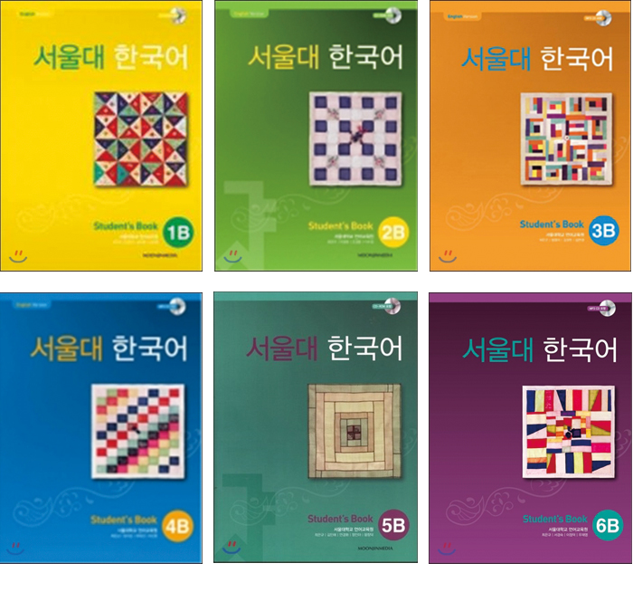
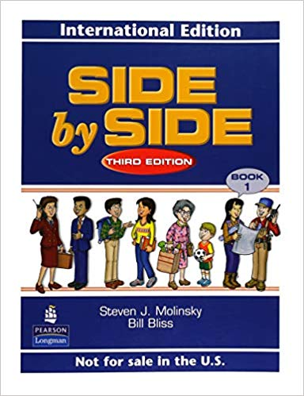

ミリネ重要レッスン
ミリネ重要レッスンのコンテンツ部分
ミリネFaceBook
個人レッスンは都合に合わせて予約し、マイペースで勉強できます。
『個人レッスン』
個人レッスンではテキストを使用し、聞く・話す・読む・書くを総合的に学習します。
文法、語彙、表現については講師から説明いたしますが、レッスンの7割は音読や会話となり、
生徒さんにどんどん声を出していただくことをモットーとしております。丁寧な解説で文法のポイントを学んだ後は、練習問題で反復練習をし、
「書くチカラ」も身につけます。授業中に学習した本文や例文は暗記していたただき、次のレッスン時に、 韓国語で声に出していただきます。
レッスンはこのように丁寧に行われるため、 1コマで１つの課の50％~80％ほどの目安で進められます。
『詳細』
対象
入門・初級・中級、上級 どなたでも
とにかく正確な発音で話したい方
もっと上手に話したい方
より韓国人らしく言いたい方
日程
火~金 10:00-21:00 予約制(50分）/ 土 9:30~18:00 日 10:00~17:00
目標
韓国語で不自由なく話せること
テキスト
初級および中級のレッスンではソウル大学語学研究院テキスト 「韓国語1A/1B」「韓国語2A/2B」「韓国語3A/3B」「韓国語4A/4B」 「韓国語5A/5B」「韓国語6A/6B」を使います。教室でテキストとCDを販売しています。 5級では、『KBSの韓国語ラジオドラマ』（アルク）、『間違いやすい韓国語表現100』初級編・中級編（白帝社）などを教材に使用し、読解・音読・暗誦をします。 6級では、『KBSの韓国語標準発音と朗読』（アルク）、韓国の小説やエッセイ、新聞社説、韓国の昔話(명품 뉴 구비구비 옛이야기)などを教材に使用し、 読解・音読・暗誦をします。

進め方
❶ テキスト本文の理解（音読、和訳、発音指導、オバーラッピング、シャドーイング）
❷ 文法、語彙、表現の学習（音読、和訳、発音指導）
❸ 練習問題（作文、音読、聞き取り、聞き逃した箇所の和訳）
❹ 学んだことは次回に復習（講師：日本語→生徒さん：韓国語に訳して声に出す）
内容
❶ 主に音読(声に出して読む)を中心とした指導をしています。音読で大切なのは、その場で先生から、きちんと発音と抑揚の指摘を受け、直してもらうことです。 スポーツ選手のトレーナーのように、発音と抑揚の技術を教え、練習をそばで支えてくれる人が必要なのです。 練習問題も声に出して解いていただきます。
❷ そのため授業は予習を前提として進められます。予習課題をしていただくことで週1回や2~3回の授業を無駄なく消化できるようになります。
❸ 韓国語のテキスト本文や文法の和訳も事前にしてきていただきます。当教室では受講生の和訳に正確なチェックを入れ、より効果的に覚えられるようように指導します。 もちろん和訳していく中で出てくる似ている文型や微妙なニュアンスの違いも漏れなく解説いたします。
❹「オバーラッピング」と「シャドーイング」を使って、ネイティブの話すスピードについて行けるようなトレーニングを行います。
※オバーラッピング:音声と同時に読むこと
シャドーイング : テキストを見ないで音声だけを聞きながら重ねて言うこと
❺韓国語訳の復習を通して学んだ内容の定着を図る:
１つの課が終わったら、学習した「文型や表現」は次の課を始める前に韓国語訳を行い、どのくらい頭の中に定着したか確認します。 講師が日本語で例文を話します。
※ミリネのレッスンは主に受講生の方が約7割話すことで、聞き取り力・会話力の両方を引きあげます。
入学金
6,000円
授業料
| 12回コース | |
|---|---|
| 目安 | 週1コマ → 4コマ(1ヶ月) × 3ヶ月 = 12回 |
| 1コマ | 4,600円 |
| 授業料 | 12回=55,200円 (税込み:60,720円) |
| 有効期限 | 3ヶ月 |
| 24回コース | |
|---|---|
| 目安 | 週1コマ → 4コマ(1ヶ月) × 6ヶ月 = 24回 |
| 1コマ | 4,100円 |
| 授業料 | 24回=98,400円 (税込み:108,240円) |
| 有効期限 | 8ヶ月 |
| 55回コース | |
|---|---|
| 目安 | 週2コマ → 8コマ(1ヶ月) × 6.8ヶ月 = 55回 |
| 1コマ | 3,700円 |
| 授業料 | 55回=203,500円 (税込み:223,850円) |
| 有効期限 | 1年 |
| 90回コース | |
|---|---|
| 目安 | 週2.5コマ → 10コマ(1ヶ月) × 10ヶ月 = 90回 |
| 1コマ | 3,300円 |
| 授業料 | 90回=297,000円 (税込み:326,700円) |
| 有効期限 | 1年 |
『生徒の声』
| WY様｜4級｜2019.07 |
|
ソウル大学教科書を通じて文法を学びながらも各課のテーマに沿った単語や表現、教科書に記載はないけれども良く使う言い回しも教わりました。 韓国の生活、歴史にも話題が及ぶこともあり、充実した授業でした。 ネイティブの先生からの発音チェックでは、自分では気づかないクセや、発音のポイントを教わりました。韓国に行っても、おそらく直してくれる人はいないと思うので有益でした。 どの先生も丁寧に教えてくださり、感謝しています。 授業内容の録音の許可をいただけたおかげで、今まで消化しきれなかった分を韓国滞在中に聞いて復習し、確実に身につけたいと思います。 ありがとうございました。 |
| 「1」ミリネ教室に通ってよかったこと |
|
❶私の興味にあわせて、教えてくださること 私の興味がある韓国の歴史や、ある単語の語源、発音するときの唇や舌の仕組み、漢字語の規則など、韓国語の勉強そのものと直接関係ないような話も混ぜながら、たくさんしてくださいました。 意識的に私に合わせたネタを準備してくださり、知的好奇心が刺激されたので「もっと知りたい、もっと聞きたい」というワクワクした気持ちにつながりました。 ❷質問に納得いくまでとことん説明してくださるところ 特に、似た単語が二つあって使い分けがよくわからないとき、私が納得できずにモヤモヤしていると、先生方がとにかくたくさんの例文を出してくださいます。いろんな例文を聞いていくうちに、なんとなく腑に落ちるポイントが見えてきます。 言語なので、なにもかもが明確に決まっているわけではないと思うのですが、例をたくさんあげてもらうことで、できるだけネイティブに近い単語のチョイスができるように訓練されるように思いました。 ❸安心感があるところ 我ながら変な質問をしたりしたのですが、間違っても、受け容れてくれる安心感がありました。 授業は、韓国語と日本語の両方で進むのですが、最初の方は日本語が多く、私からの質問も日本語ですることが多かったように思います。 でも、だんだん先生の韓国語の割合が増えてきて、自分も韓国語で質問するようになりました。先生方が、私の言いたいことを注意深く読み取ろうとしてくださるのが分かるので、私もなんとか伝えよう・伝えたい、という気持ちで一生懸命にトライできたと思います。 授業がほぼ韓国語になると、上達したんだなという実感も湧き嬉しくなります。 |
| 「2」短期間で実力を伸ばすコツ |
| ❶ 疑問はすぐに調べること、 調べてもわからなかったら書き留めておいて授業で必ず質問すること、この二つを意識しました。 携帯にネイバーの韓国語辞書を入れて、どこにいても調べられる状況を作りました。考えてみたら、ドラマを見ていても歌を聞いていても、気になった言い回しや単語があればメモ・メモ・メモ…。 ミリネのテキストは余白が多くレイアウトされているので、テキストの他にはノートを作らず、すべてテキストにメモするかたちで勉強しました。とにかくテキストさえみれば復習が完結するのが私にはとても合っていて効率的だったのと、 それだけメモするとテキストがボロボロと擦り切れてくるので「これだけやったんだ」という達成感も生まれ、自信につながりました。 ❷「私、国内留学みたいなことがしたいんですが…」 私が最初にミリネに問い合わせをした内容です。 授業を１日に複数コマ取って毎日通うのはもちろん、それ以外に韓国語で独り言を言うことを徹底しました。 --あれ？なんだっけ？ --今日のランチはなに食べようかなあ --私のボールペンどこ行っちゃったんだろ？ --今日は雨が降りそうだな 実際に口に出す独り言だけでなく、脳内で再生される独り言も、すべて韓国語で言うように意識しました。 そうすると、「これ、どう言うともっと自然なんだろう？」と疑問が湧き、それを次の授業で質問したりして、だんだん慣れていきます。そのうち夢でも韓国語を話すようになったりもして、授業のない日も韓国語脳を維持することができました。 語学の勉強は、自らその言語に浸りに行くような積極的な意識が必要だと思うのですが、困った時に助けてもらえるバックアップ体制もまた必要なことだと思っています。その点で、私はミリネに通えて、先生方に出会えてほんとによかった！と心から思ってます。ホントですよ！言わされてないですよ笑。 これからもがんばります。 |
| TM様｜3級｜2016.8～2017.10(新宿) |
|
ミリネではテキスト本文をただ読むだけでなく、テキストCDの音声とオーバーラッピングしながら読み、本文全てを暗記する等、他の教室ではあまりやらないような方法で学びました。 この様な方法は、ある一定の緊張感を保ちつつ授業を受ける事が出来るので、とても良いと感じました。 授業で文法の復習がある点も、帰宅後に自ら復習をしようというやる気に繋がったと思います。 もちろん、緊張感ばかりでなく、先生方と楽しい話も沢山する事も出来ました。 最初からミリネで学習していたら良かったなぁと感じています。 |
もっと読む...
『短期個人レッスン』
こんな悩みはありませんか？
「色んな勉強法を試してみたが、伸びない。」
「文法はある程度マスターしたつもりだけど、会話に自信が持てない」
「グループレッスンを受けているが、話す順番がなかなか回ってこない」
「基礎から学びたいけど、何をどうしたらいいかわからない」
「仕事で韓国語が必要で自分に合わせた指導が必要」
語学は集中的に学んでこそ上達します。
韓国語を本気でマスターしたい方にオススメの短期集中個人レッスン！
自由予約制だから好きな曜日程間にレッスンが可能！週に複数回、もちろん毎日だってＯＫ！
※短期集中個人レッスンとは：通常の個人レッスンチケットよりも短期間で集中的に勉強するチケット
（12コマ、24コマ、48コマ、72コマ）を購入いただくことで１コマあたりのお値段が割安になるレッスンです。
皆さまの本気をミリネが応援します！
語学は毎日続けないと上達できません。
ミリネで韓国語留学！
信頼できる韓国人の先生が責任を持ってあなたをサポートします。
自宅が遠くて通えない方にはスカイプでマンツーマンレッスンが可能です。
もちろん、毎日来られないという方もまとめて一日で４~５時間一気に勉強するなど、韓国語漬けにできます！
詳細
対象
入門・初級・中級・上級、どなたでも
あらゆる勉強方法を試したが、長続きしなかった方
韓国留学の前、短時間でレベルアップしたい方
日程
火~金 10:00-17:00 予約制(50分)
目標
ハングルが読めない方でも毎日通えばたった3ヶ月で韓国語が上手になります。
中級から上級に、初級から上級には2ヶ月でO.K!
カリキュラム
| 初級 | |||
| コマ | 12コマ | 24コマ | 48コマ |
|---|---|---|---|
| 1 | 発音のルール1・2 発音矯正集中トレーニング1 |
発音のルール1・2 発音矯正集中トレーニング1・2 |
発音のルール1 発音のルール2 発音矯正集中トレーニング1・2・3 |
| 2 | |||
| 3 | |||
| 4 | 해요/입니다 体 連体形 変則のまとめ 初級 時制, 助詞のまとめ |
||
| 5 | ネイティブ抑揚トレーニング1・2 ネイティブ抑揚トレーニング2 |
||
| 6 | ネイティブ抑揚トレーニング1・2・3 | ||
| 7 | 韓国語耳になる速聴トレーニング 1 | ||
| 8 | 必須初級単語(全体25%構成)1・2・3 | 音読トレーニング 1・2 | |
| 9 | 韓国語耳になる速聴トレーニング 1 | ||
| 10 | 해요/입니다, 初級 敬語 連体形, 助詞の総まとめ 変則,～겠/았었、時制、数字、日付 ～아/어서 vs ～고 初級～아/어 総まとめ 初級理由表現の総まとめ |
音読トレーニング 1 音読トレーニング 2 |
|
| 11 | 会話トレーニング 1・2 | ||
| 12 | 해요/입니다, 初級 敬語 連体形, 助詞のまとめ 変則のまとめ 겠/았었など 時制, 数字 日付 아/어서 vs 고 初級 아/어 総まとめ 初級 理由表現 総まとめ 意思・可能形 表現のまとめ 初級 부정적 表現のまとめ 対比と推量 願望, お願い, 要求, 助け 試み, 経験 提案, 意見 目的, 計画 初級 条件と仮定 |
||
| 13 | 12コマ修了 | ||
| 14 | |||
| 15 | |||
| 16 | |||
| 17 | 必須初級単語(全体50%構成) 1・2・3・4 |
||
| 18 | |||
| 19 | |||
| 20 | |||
| 21~24 | 会話トレーニング 1・2・3・4 | ||
| 25 | 24コマコース修了 | ||
| 26 | |||
| 27~33 | 必須初級単語(100%構成) 1・2・3・4・5・6・7 |
||
| 34~37 | 初級 必須表現 1・2・3・4 |
||
| 38~40 | TOPIK Ⅱ 作文対策 1・2・3 |
||
| 41~48 | 会話トレーニング 1・2・3・4・5・・7・8 |
||
| 49 | 48コマコース修了 | ||
| 中級 | |||
| コマ | 12コマ | 24コマ | 48コマ |
|---|---|---|---|
| 1 | 発音のルール1・2 発音矯正集中トレーニング1 |
発音のルール1・2 発音矯正集中トレーニング1・2 |
発音のルール1・2 発音矯正集中トレーニング 1・2・3 |
| 2 | |||
| 3 | |||
| 4 | 推量と予想表現 文章体と반말体 中級 理由 総まとめ(거든요, 잖아요 等) 初中級 間接話法 |
||
| 5 | ネイティブ抑揚トレーニング 1・2 |
||
| 6 | ネイティブ抑揚トレーニング 1・2・3 |
||
| 7 | 韓国語耳になる速聴トレーニング 1 | ||
| 8 | 必須中級単語(全体25%構成) 1・2・3 |
音読トレーニング 1・2 |
|
| 9 | 韓国語耳になる速聴トレーニング 1 | ||
| 10 | 推量과 予想 表現 文正体とタメ口体 中級 理由 総まとめ(거든요, 잖아요など) 初中級 間接話法 使役/受身 決心と意図(～ㄹ까하다,～려던 참이다など) 回想を表す 表現のまとめ(～더,～던) |
音読トレーニング 1・2 |
|
| 11 | 会話トレーニング 1・2 |
||
| 12 | 音読トレーニング 2 推量と予想 表現 文正体とタメ口体 中級の理由表現の総まとめ(～거든요,～잖아요など) 初中級の間接話法 使役/受身 決心と意図(～ㄹ까하다,～려던 참이다など) 回想を表す表現のまとめ(～더,～던) 中級条件の表現(～아/어야,～거든などを含む) 条件を表す表現 -다가 시리즈 整理 -고 보니 vs -아/어 보니 整理 상태를 나타내는 表現 間接話法 深化 中級 仮定 表現 総まとめ 上級になるための文法(後悔, 習慣, 態度の表 など) |
||
| 13 | 12コマ修了 | ||
| 14 | |||
| 15 | |||
| 16 | |||
| 17 | 必須中級単語(全体50%構成) 1・2・3・4 |
||
| 18 | |||
| 19 | |||
| 20 | |||
| 21 | 会話トレーニング 1・2・3・4 |
||
| 22 | |||
| 23 | |||
| 24 | |||
| 25 | 24コマコース修了 | ||
| 26 | |||
| 27~33 | 必須中級単語(100%構成) 1・2・3・4・5・6・7 |
||
| 34~37 | 中級必須表現 1・2・3・4 |
||
| 38~40 | TOPIK 5級目標 作文対策 1・2・3 |
||
| 41~48 | 会話トレーニング 1・2・3・4・5・6・7・8 |
||
| 49 | 48コマコース修了 |
| 上級 | |||
| コマ | 12コマ | 24コマ | 48コマ |
|---|---|---|---|
| 1 | 発音のルール1・2 発音矯正集中トレーニング1 |
発音のルール1・2 発音矯正集中トレーニング1・2・3 |
発音のルール1・2 発音矯正集中トレーニング 1・2・3 |
| 2 | |||
| 3 | |||
| 4 | 上級変化表現(～에 따라,～음에 따라,～어서부터) 上級引用文法 上級否定表現(나마/자봤다/다 한들/ 다 해도など) 上級状況表現(마당에/판국에/状況에/참에/통에) |
||
| 5 | ネイティブ抑揚トレーニング1・2 | ||
| 6 | ネイティブ抑揚トレーニング 1・2・3 |
||
| 7 | 韓国語耳になる速聴トレーニング 1 | ||
| 8 | 必須上級単語(全体25%構成) 1・2・3 |
音読トレーニング 1・2 | |
| 9 | 韓国語耳になる速聴トレーニング 1 | ||
| 10 | 上級変化表現(～에 따라,～음에 따라,～어서부터) 上級引用文法 上級否定表現(～나마/～자봤다/～다 한들/～다 해도など) 上級状況表現(～마당에/～판국에/～状況에/～참에/～통에) 上級推量表現(～듯싶다,～듯하다,～을 법하다,～나 보다,～모양이다など) 上級条件表現(～다면 몰라도,～고 한다면,～겠다면など) ネイティブが使う韓国語 表現 1 |
音読トレーニング 1 音読トレーニング 2 |
|
| 11 | 会話トレーニング 1 会話トレーニング 2 |
||
| 12 | 上級変化表現(～에 따라,～음에 따라,～어서부터) 上級引用文法 上級否定表現(～나마/～자봤자/～다 한들/～다 해도など) 上級状況表現(～마당에/～판국에/～状況에/～참에/～통에) 上級推量表現(～듯싶다,～듯하다,～을 법하다,～나 보다,～모양이다など) 上級条件表現(～다면 몰라도,～고 한다면,～겠다면など) ネイティブが使う韓国語表現 1 ネイティブが使う韓国語 表現 2 追加と含む(～거니와,～기는 커녕,～되,～을 비롯해서など) 習慣과 態度 (～아/어 대다,～기 일쑤이다,～는 둥 마는 둥 하다など) 状況や基準を表す 表現(～는 가운데,～는 마당에,～치고など) 強調表現(여간-지 않다,～기가 이를 데 없다,～려야～을수 없다) 上級敬語 深化 事のすべて(~것, ~일, ~경우, ~적,～기) "上級必須反語(~줄 누가 알았겠어요?, ～다 뭐예요/ 무슨(뭔) 소용이 있어요 , ～만～어・어도 어딘데요, ～겠어? 겠니? / 뿐이겠니?, ～랴 / 무슨～랴)" |
||
| 13 | 12コマ修了 | ||
| 14 | |||
| 15 | |||
| 16 | |||
| 17 | 必須上級単語(全体50%構成) 1・2・3・4 |
||
| 18 | |||
| 19 | |||
| 20 | |||
| 21 | 会話トレーニング 1 | ||
| 22 | |||
| 23 | |||
| 24 | |||
| 25 | 24コマコース修了 | ||
| 26 | |||
| 27~33 | 必須上級単語(100%構成) 1・2・3・4・5・6・7 |
||
| 34~37 | ネイティブのようになる、上級必須表現 1・2・3・4 |
||
| 38-40 | TOPIK5,6級を目指す作文対策 1・2・3 |
||
| 41~48 | 会話トレーニング 1・2・3・4・5・6・7・8 |
||
| 49 | 48コマコース修了 |
テキスト
ミリネ韓国語テキスト１，２，３，４
進め方
❶ テキスト本文の理解（音読、和訳、発音指導、オバーラッピング、シャドーイング）
❷ 文法、語彙、表現の学習（音読、和訳、発音指導）
❸ 練習問題（作文、音読、聞き取り、聞き逃した箇所の和訳）
❹ 学んだことは次回に復習（講師：日本語→生徒さん：韓国語に訳して声に出す）
内容
❶ 主に音読(声に出して読む)を中心とした指導をしています。音読で大切なのは、その場で先生から、きちんと発音と抑揚の指摘を 受け、直してもらうことです。 スポーツ選手のトレーナーのように、発音と抑揚の技術を教え、練習をそばで支えてくれる人が必 要なのです。 練習問題も声に出して解いていただきます。
❷ そのため授業は予習を前提として進められます。予習課題をしていただくことで週1回や2~3回の授業を無駄なく消化できるように なります。
❸ 韓国語のテキスト本文や文法の和訳も事前にしてきていただきます。当教室では受講生の和訳に正確なチェックを入れ、より効果 的に覚えられるようように指導します。 もちろん和訳していく中で出てくる似ている文型や微妙なニュアンスの違いも漏れなく解 説いたします。
❹「オバーラッピング」と「シャドーイング」を使って、ネイティブの話すスピードについて行けるようなトレーニングを行いま す。
※オバーラッピング:音声と同時に読むこと
※シャドーイング : テキストを見ないで音声だけを聞きながら重ねて言うこと
❺韓国語訳の復習を通して学んだ内容の定着を図る:
１つの課が終わったら、学習した「文型や表現」は次の課を始める前に韓国語訳を行い、どのくらい頭の中に定着したか確認します。 講師が日本語で例文を話します。
※ミリネのレッスンは主に受講生の方が約7割話すことで、聞き取り力・会話力の両方を引きあげます。
入学金
6,000円
授業料
| 超短期 | 12回 | 24回 | 48回 | 72回 |
|---|---|---|---|---|
| 単価/1コマ | 3,580円 | 3,280円 | 2,880円 | 2,680円 |
| 合計金額 | 42,960円 | 78,720円 | 138,240円 | 192,960円 |
| 使用期限 | 1週間 | 3週間 | 6週間 | 2ヶ月 |
| 短期Ⅰ | 12回 | 24回 | 48回 | 72回 |
|---|---|---|---|---|
| 単価/1コマ | 3,880円 | 3,480円 | 3,180円 | 2,880円 |
| 合計金額 | 46,560円 | 83,520円 | 152,640円 | 207,360円 |
| 使用期限 | 3週間 | 1ヶ月 | 2ヶ月 | 3ヶ月 |
| 短期Ⅱ | 12回 | 24回 | 48回 | 72回 |
|---|---|---|---|---|
| 単価/1コマ | 4,180円 | 3,780円 | 3,480円 | 3,280円 |
| 合計金額 | 50,160円 | 90,720円 | 167,040円 | 236,160円 |
| 使用期限 | 1ヶ月 | 2ヶ月 | 3ヶ月 | 5ヶ月 |
お申込み
生徒の声
| A様｜48コマコース｜2020.1 |
|
約2か月間という短い期間でしたが、すごく充実した時間になりました。 独学ということもあり、最初は思っていたより出来ませんでしたが、辛すぎず楽しいと思えるレベルで始められたことで毎日2，3コマ ずつでも続けられました。 教科書の内容に合わせながら、韓国の文化について教えてくださるのも魅力の１つでした。 また、実際に話す練習が多いことで、発音も思考力も実践的なものになったと思います。 지금까지 정말 감사했습니다. 앞으로도 열심히 하겠습니다. |
| Y様｜24コマコース｜2020.2 |
|
約1か月間通って、頭の中に自然と韓国語が浮かぶ瞬間が増えてきたと思います。 いつも語彙力がなくて自分の言いたいことが言えなかったのが、少しずつ語彙力がついて表現できるようになってきたと思います。 朝のレッスンは特に頭が働いてない時もあって先生方も本当に大変だったと思います。 本当にありがとうございました。毎週通って、ますます韓国語が好きになりました。 もっとスムーズに韓国語を口に出して、この乾燥の内容が韓国語で直接お伝えできるようにこれからもずっと勉強しつづけたいと思います。정말 감사합니다~~~!! |
| K様｜48コマコース｜2020.3 |
|
48時間大変お世話になりました。韓国語のドラマを字幕無しで見たいために勉強をはじめましたが、自分で言いたい事を韓国語で話せるようになることがとても楽しく思えました。 これからもドラマを見るためだけではなく、韓国旅行で使えるようにもっと勉強しようと思います。 毎日、前回の復習をして、習った語彙と文法を使いながらお話をする時間があったことは学んだことを実践することでとてもためになりました。とても楽しく勉強できました。 앞으로도 열심히 공부해요. 감사합니다. |
| T様｜24コマコース｜2019.9(新宿) |
|
夏休みに時間が取れたので今回の短期集中コースをとりました。
毎回前回の復習があり、緊張感をもってレッスンを受けられました。 プライベートレッスンだったので分からない所がいつまでも質問できてとてもよかったです。 また機会があったら受講したいと思います。ありがとうございました。 |
| F様(韓国在住)｜12コマコース｜2019.8(新宿) |
|
短期間でしたが、久しぶりに集中して勉強することが出来た４日間でした。実際に言いたいことを口に出して説明しようとするとやはりうまく言えなくてもどかしい思いをしましたが、 韓国に帰って実践で上達したいと思います。勉強したテキストを何度も復習しながら身につけたいと思います。 発音についても意識して発音するように努力したいと思います。ありがとうございました。 ツイッター楽しみにまた読ませて頂きます。いつも勉強になっています。 |
| H様｜24コマコース｜2018.11(新宿) |
|
留学前に24回コースに通いました。 スピーキングに自信がなかったので、 マンツーマンで発音を教えてくださってとても勉強になりました。 集中して勉強が出来て自信になりました。 |
もっと読む...
『発音レッスン』
韓国語学習者の皆さん! こんな経験はありませんか？
「簡単な単語のはずなのに、通じなくてショック」
「相手の言っていることが聞き取れず、会話が続かない」
これらの悩みは、発音変化のルールをきちんと理解することで大きく改善できます。
この講座ではコミュニケーションでつまづきやすい部分を克服できるよう、効果的、効率的に会話指導をします。
❶ 日本語には無い音を発音したり、日本語の発音とはどのように違うのかその仕組みを理解し、実践できるようにします。
❷ ピッチ（音の高低）や、文章の抑揚（イントネーション）の特徴を理解し、しっかり聞き取ってもらい、また相手の韓国語を聞き取るためのコツをつかみます。
❸ 韓国語は文字と発音がかけ離れている場合が多く、そのためにコミュニケーションがうまくいかない場合がよくあります。 身近な単語や例文を使い発音変化をしっかり学び、正しい発音を身につけます。
❹ 理論を学んだ後は、ネイティブ講師とどんどん韓国語を声に出して話します。受講生のレベルに合わせて教材を選定いたします。
個人レッスンと同じく自由予約制です。ご都合のよい曜日と時間を選べ、一度の来校で何回分を受講するかなど自由に決めることが可能です。
詳細
対象
入門・初級・中級、上級 どなたでも
とにかく正確な発音で話したい方
もっと上手に話したい方
より韓国人らしく言いたい方
日程
火～金 10:00-21:00 予約制(50分）
土・日 10:00-18:00
目標
①最初から発音をきちんと学ぶ事
②韓国語の不自然な発音及び抑揚を直し、より流暢に話す事
③ネイティブの発音を身に付ける事
内容
| 回 | タイトル | 内容 |
|---|---|---|
| 1 | 今のあなたの発音＆聞き取り診断 | ・音はどこで作られる？（母音、子音） ・日本語に無い音VS韓国語に無い音（母音、子音） ・音の高さに秘密があった！（平音、激音、濃音）） ・濁る？濁らない？なぜ？（平音） |
| 2 | パッチムは日本語にもある！ ㅁ,ㄴ,ㅇそしてㅂ,ㄷ,ㄱ |
・日本語と韓国語の『パッチム』比較 ・日本語の「る」とは違う！ㄹパッチム攻略法。 |
| 3 | 目指せ！聞き取り強化！ 発音変化まとめ（1） |
・連音化（할아버지 ハラボジ） ・日本語の「る」とは違う！ㄹパッチム攻略法。 ・ㅎの弱音化（고향 コヤン, 전화번호 チョナボノ） ・ㅎの無音化（좋아요 チョアヨ） ・口蓋音化（같이 カッチ） |
| 4 | 目指せ！聞き取り強化！ 発音変化まとめ（2） |
・濃音化（학교 ハッキョ） ・鼻音化（막내 マンネ） |
| 5 | 目指せ！聞き取り強化！ 発音変化まとめ（3） |
・流音化（신라 シルラ） ・ㄴ挿入（일본 요리 イルボンニョリ） |
| 6 | ★中間評価 | ★発音チェック＆評価 ・例文１００音読。 ・矯正前との比較。 |
| 7～11 | レベルに合うテキストで発音＆聞き取り強化 | 受講生の方の学習歴やレベルに合わせて教材を選定し ・ネイティブ講師と一緒に、どんどん韓国語を声に出して実践！ ・随時あなたの発音をチェックし、正しい発音へと導きます。 教材例）「KBSの韓国語 標準発音と朗読」「間違いやすい韓国語表現」など |
| 12 | 発音＆聞き取り診断 | ・改善点と今後の課題についてアドバイス |
| 13～24 | 音読練習 | ・抑揚の改善点と今後の課題について徹底的に練習 |
入学金
6,000円
授業料
| 12回コース | |
|---|---|
| 目安 | 週1コマ → 4コマ(1ヶ月) × 3ヶ月 = 12回 |
| 1コマ | 4,600円 |
| 授業料 | 12回=55,200円 (税込み:60,720円) |
| 有効期限 | 3ヶ月 |
| 24回コース | |
|---|---|
| 目安 | 週1コマ → 4コマ(1ヶ月) × 6ヶ月 = 24回 |
| 1コマ | 4,100円 |
| 授業料 | 24回=98,400円 (税込み:108,240円) |
| 有効期限 | 8ヶ月 |
生徒の声
| O様｜2019年9月 |
| 発音の細かいところをしっかりと教えて頂いたので、、 とてもためになりました。「ㄹ」は特に今まで難しかったのですが、 どうしてその様な発音になるのかも、理解できたので自分で練習する時にも役に立ちます。、 習ったことを復習してもっと会話に生かせるように頑張りたいです。、 抑揚も今まできちんと意識したことが無かったので、、 パータンを考え、くさんの例文で学べたのは良かったです。、 これからも、もっと勉強頑張ろうと思える授業でした。、 先生方もいつもていねいに楽しく教えて下さり、、 ありがとうございました。、 また、お休みの時に来たいと思います。 |
| C様｜2016年4月 |
| 韓国語歴10年にして改めて「正確な発音、抑揚で話したい！」という気持ちが湧いて今回この講座を受けました。 10年もの間、パッチム○（イウン）の発音が習得できておらずいい加減にしてきた「ツケ」は大きくて、ちょっとやそっとでは修正できませんが、 先生がその都度指摘してくださったおかげで意識して発音するようになりました。 音変化などはこれまで勉強してきたため問題ないように思っていましたけれども、基本的な平音、激音、濃音でさえ文章の中で発音すると抑揚がいい加減になってしまうことも、 今回の講座の中の指摘で 新たに気づいたことです。 入門や初級のうちにこのような講座を受けておくことは理想的ですが、ある程度学習が進んでいる学習者こそ見直す機会が必要ですね。 これからも１年に１回はこの講座を受けたいと思っています。ありがとうございました!! |
| M様｜2016年1月 |
| ずっと独学でCDを聞いて勉強していたので、発音できているのかずっと不安だったのですが、 今回授業を受けて、出来ていること、出来てなかったことが、分かってよかったです。 1人では全く分からなかった違いが分かりました。 これからは家での発音練習を少し自信を持ってやれそうです。 簡単な会話も、話そうとすると、全く言葉が出てこないので、 話せように、また別の講座を受けてみたいと思います。ありがとうございました。 |
| N様｜2016年1月 |
| 初めて集中講座（発音矯正クリニック）に参加しました。正しい発音を教えていただいたことで、 今までの自分の発音が如何にいい加減だったのかということに気づかされる、良い機会となりました。 ネイティブへの道のりはまだまだ遠いですが、ひとつひとつ丁寧に正確に発音していくことから始めたいと思います。 4日間ありがとうございました。 |
| H様｜2016年1月 |
| 四日間、ありがとうございました。初めての発音矯正レッスンでしたが、とても楽しく受けさせていただきました！ 今まで疑問に思っていたことがスッキリ解消した感じです。忘れないように、しっかりと復習したいと思います。 一週間過ごしたソウルでも、以前より聞き返されることが減ったような気がします。 モチベーションが上がりましたので、 引き続き韓国語の勉強頑張ります！また、よろしくお願いします。本当にありがとうございました^ ^ |
『プレミアムレッスン』
一般英会話コースで、あなたの生活をさらに豊かに。
英会話に自信がつくと、世界が違って見えてきます。
英会話をもう一度やり直したい方、趣味として初めから学びたい方などにおすすめのコースです。
レッスンはこのように丁寧に行われるため、1コマで１つの課の50％~80％ほどの目安で進められます。
特典: 英語のチケットで韓国語の授業も自由に取ることが可能です(新宿校のみ)。
例）12コマ：英語6コマ+韓国語6コマなど自由にご受講できます。
詳細
| Warm up&復習 （5min) |
レッスンのスタートは、あいさつと、前回のレッスンからの間、休日のできごとや会社や学校でのエピソードなどを、お互いに話します。 過去に習った表現を使いながら会話し、英会話の世界へ切り替えます。 |
|---|---|
| Targetの解説 （10min） |
その日のターゲット（レッスンで学習する単語、表現、文法など）について解説します。実際にその表現が使われる場面を想定して、実際に使ったりしながら理解を図ります。 |
| Dialog （15min） |
授業の始めに確認したターゲットを実践的に学習します。学習する表現や使い方をより細かく確認し、実際の場面でどのように使うのかを学びます。発音やアクセントなども指導します。 |
| Practice （10min） |
会話のバリエーションや表現力を広げるために練習します。しっかり時間を取り、楽しみながら会話表現を身につけます。きごとや会社や学校でのエピソードなどを、お互いに話します。 過去に習った表現を使いながら会話し、英会話の世界へ切り替えます。 |
| Application （応用）（10min） |
自分のことについて置きかえて話し、さらなる定着を図り、ターゲットを確実に定着させます。このことにより、自信をもって話すことができるようになります。 |
日程
火~金 12:00-21:00 / 土 10:00-18:00 / 予約制(50分）
このコースで目指すレベル
基礎的な英会話表現を学び、英会話を初めて学習する人が英会話で話したり聞いたりすることに慣れることを目標とします。 中学１年生程度の文法事項を学習し、 短い文でスムーズに質問したり答えたりできるようにします。 be動詞や一般動詞（現在形と過去形）の肯定文、否定文、Yes/No疑問文、whatやwhereなどの基本的なwh疑問文の作り方や答え方などを定着し、 口頭で使えるようにします。買い物では値段を尋ねることができるようにします。
テキスト
Can You Bleive It
ありそうでなさそうな実際にあった面白いショートストーリーを使って学べるテキストのため、興味をもって進めることができます。 テキストに出てくる構文やイディオムは、普段よく使われる表現を多用しているので、実践的になっています。 本文を読む前に、6コマ漫画のストーリーについて話してみます。 自分が言いたい言葉、表現が確認できます。その後、本文を読むと必要な表現や語彙を学びより実践的に使えるようになります。
Side by Side

世界的大ベストセラーのコースブックです。会話、リーディング、ライティング、リスニング演習を通して総合的に英会話の4技能をバランスよく習得できます。 カラフルなイラストも満載で、楽しみながら英会話力をアップしていける構成になっています。
入学金
6,000円
授業料
| コマ | １コマあたり | 授業料 | 有効期限 |
|---|---|---|---|
| 12コマ | 4,600円 | 55,200円(税抜) | 3ヶ月 |
| 24コマ | 4,100円 | 98,400円(税抜) | 8ヶ月 |
| 55コマ | 3,700円 | 203,500円(税抜) | 1年間 |
お申込み
生徒の声
| A様 |
| 他のマンツーマンレッスンだと、下手をすると講師の話の聞き役になってしまうことがあったのですが、 こちらはきちんと間違えを指摘してくれて、ホワイトボードでフォローしてくれるのがすごくよかったと思います。 |
| S様 |
| 英会話に対して抱いていた苦手意識や嫌悪感がなくなってきたこと。外国の方に道を聞かれたりしても逃げなくなったこと。 英会話に接する機会が増えたからか、TOEICの点数もあがりました。 |
| F様 |
| 会話において話しやすい話題を提供することや、英文読解において単語の意味の背景を踏まえ説明していることなどから、良く身に付く実感があります。 |
ミリネ教室右側コンテンツ
「TOPIKⅠ・Ⅱ講座」
1日2コマずつ3日！集中攻略！

21年1月
集中講座

詳細は
こちらへ
オンラインで作文トレ
表現力をアップ
オンライン上級講座